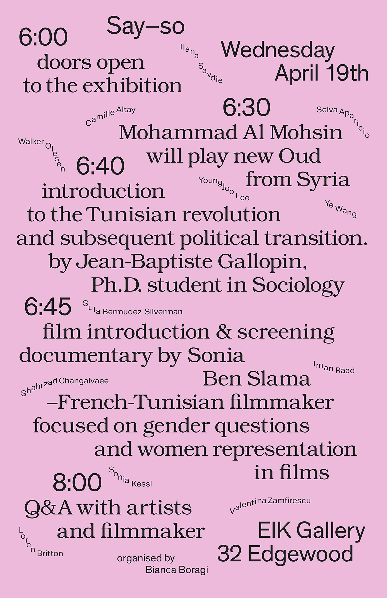
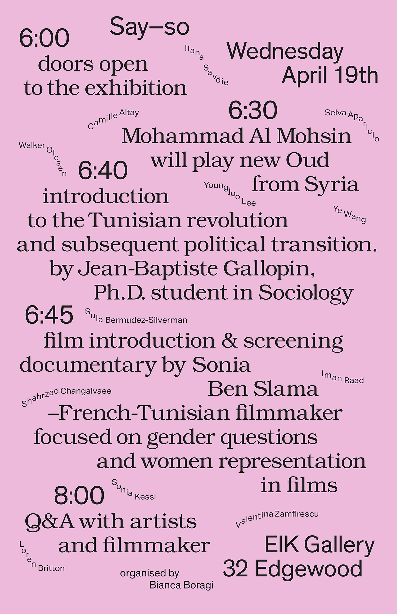

OPEN
Choreographed creation of a font.
I directed the realtime creation of a font by using my anatomy and gestures to articulate the anatomy of the letter forms.
These letters were written by Ouliana Ermolova, the interpreter.
She interpreted the the components of each letter form by following my gestures as I articulated the serifs, stems, apertures, ascenders, descenders etc. of each letter.
The video documentation of this design process became a video invitation for the open studios event, the writing became a logo of the event and was used as poster for the event
The creative direction of the film was the word open. Each artist took a different approach with respect to their studio practices, however they all worked within the framework that I established around the word “open”.
The commercial functioned as a vehicle to introduce student artists to visitors of the “Open Studio weekend at Yale School of Art” and to establish the concept of “Open” in relationship to that event.
This literature paper was founded by Jacob Hoving and I in 2016 for the purpose of creating cross disciplinary dialogue.
The topic for the inaugural
edition was vegetables, as
we considered design layout
we also thought about salat.
The newspaper composition
mirrored a salat.
Founded by Jacob Hoving and I; to be continued next year.
A performance of Velcro band choreographed by me. The participants each do movements that create sounds. The sounds generated by the participants are
limited to the movement and the placement of the velcro on their clothes.
Curated by Christopher Sleboda
Working in the capacity of artist and a part of a design team,
I contributed wall paper, a font and a neon sign to this exhibition.
I took a Dadaist approach to designing my contributions.
Helvet ica infected by dada
A VIRUS IS A SMALL INFECTIOUS AGENT THAT REPLICATES ONLY INSIDE THE LIVING CELLS OF OTHER ORGANISMS. VIRUSES CAN INFECT ALL TYPES OF LIFE FORMS, FROM ANIMALS AND PLANTS TO MICROORGANISMS, INCLUDING BACTERIA AND TEXT.
This poster combine the scheduling
information for a one day event with an exhibition
announcement, curated by friend and artist Bianca Boragi.
Typeface I created based on the combination of two words: "Spiritual and Labour".
A poster and an informational pamphlet, Youngeun Sohn and I created for an artist exhibition
The pamphlets were handed out during the
exhibition’s performance.
"THE CHARACTERISTIC OF THE STRONG IMAGE IS OF ITS BEING BORN OF THE SPONTANEOUS DRAWING TOGETHER OF TWO VERY DISTINCT REALITIES, THE RELATIONS BETWEEN WHICH ONLY THE SPIRIT HAS GRASPED..."
MAN RAY 1890-1976
A visual essay that explores
different ideologies regarding
the presentation of women
in two societies, The United
Soviet Socialist Republic-USSR and the United States
of America. The text covers
images that date from the
1940’s until 2013.
Sound bucket is an experimental instrument
it produces sound by passing compressed air
through several wind instruments. Sound can
be modulated based upon the weight of the
person sitting on the bucket.
As a graduate fellow I conducted a Media workshop that draws upon my
research in fashion photography, fashion periodicals and body politics of the
1960’s. This workshop was designed for graduate and undergraduate students
of Yale University. Participants of the workshop reviewed the archive of Harper’s
Bazaar from the 1960s. For the participants to better understand what was
going on in the past we recreated some of these posters.
The workshop took place at the photo studio where I shared my knowledge of
the process of fashion photography with the participants. Workshop participants
were able to try their hand at poster design, photography and modeling.
A newspaper featuring a story written by
an artist Isaac Howell. Created for
the occasion of the exhibition.
The script for a play about the redesign
of a company logo.
In the script I perform
a Hegelian flip which places the decision
making power in the hands of the janitor. Edited by Ouliana Ermolova
Series of workshops my colleague Ekaterina Kholyapina and
I performed in multiple secondary schools in Amsterdam. They revolved
around the critical engagement with the Internet. We developed insight
into what it means to be a “digital teenager” by introducing students to the
current level of design discourse surrounding the internet and various online
interfaces.
We engaged with Facebook, Google maps, Whatsapp and Google
mars. We stripped down facebook to its basic frame, asked the students to use
it and then be critical of it.
Thank you!
@2017


 
